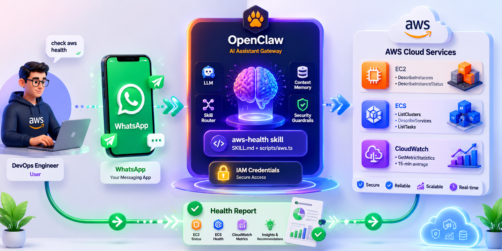

Picture this: it's 2am, your phone is blowing up, and production is down. You pry open your laptop, squint at CloudWatch dashboards, click through the ECS console, and try to figure out what broke — all while barely awake.
Now imagine instead: you type one WhatsApp message — "check aws" — and within seconds your phone shows you exactly which EC2 instances are stopped, which ECS tasks have failed, and which services have spiked CPU. No browser. No dashboard navigation. Just an answer.
That's the problem OpenClaw solves. It's an open-source AI agent that runs on your own machine, connects to your messaging apps, and executes structured "skills" when you ask in natural language. This session — delivered by Yash Garudkar, a 5-year AWS Community Builder and tech lead, at the AWS User Group Mumbai meetup — walks through building a real AWS health monitoring skill from scratch.

Figure 1: OpenClaw overview — WhatsApp message in, AWS health report out
⚡ The core idea: AI agents become useful for DevOps not by being trained on your infrastructure, but by being given well-defined tools (skills) that call real AWS APIs on demand.
By the end of these notes you will understand how OpenClaw works, how to build and install a skill, how to set up IAM correctly, and how the aws-health skill queries EC2, ECS, and CloudWatch to give you a conversational window into your production environment.